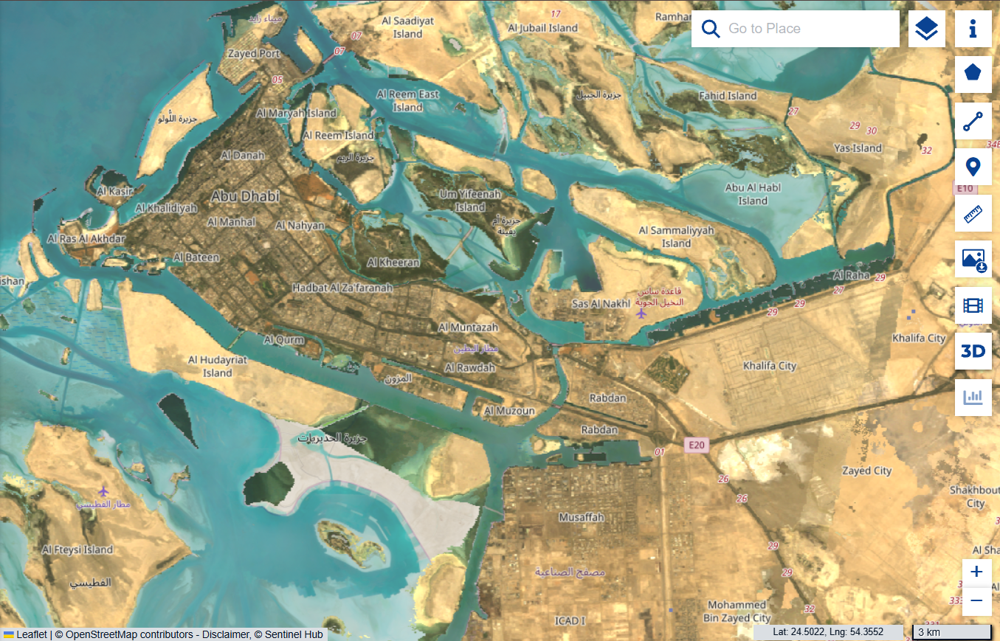

Emirato di Abu Dhabi · الإمارات العربية المتحدة
Abu Dhabi si è trasformata da un'area desertica a una metropoli moderna grazie allo sviluppo economico e urbano — un viaggio straordinario dalla sabbia ai grattacieli.
Inizia l'Esplorazione
Negli anni '50 e '60 Abu Dhabi era un piccolo insediamento costiero con poche migliaia di abitanti. La scoperta del petrolio nel 1958 ha cambiato tutto, dando avvio a una delle più rapide trasformazioni urbane della storia moderna.
Vaste distese di sabbia, dune e aree costiere incontaminate dominavano il paesaggio dell'emirato.
Strade non asfaltate, edifici in fango e canna, assenza di grandi reti idriche o elettriche.
Meno di 50.000 abitanti nel 1970, principalmente pescatori e nomadi beduini.
Trascina il cursore sulle immagini satellitari per confrontare Abu Dhabi nel 1997 con la città odierna. L'espansione urbana è visibile in ogni angolo dell'immagine.
Analisi Completa →